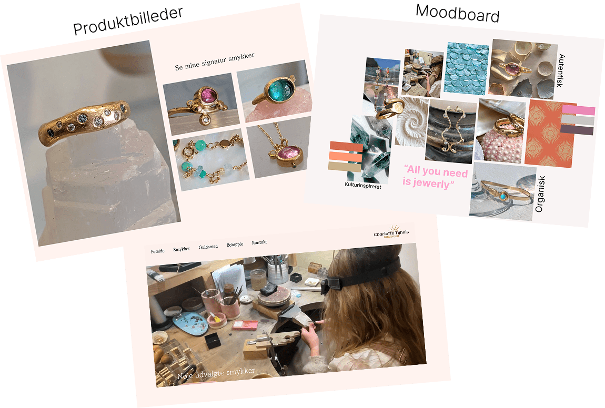
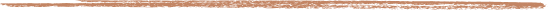
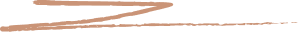
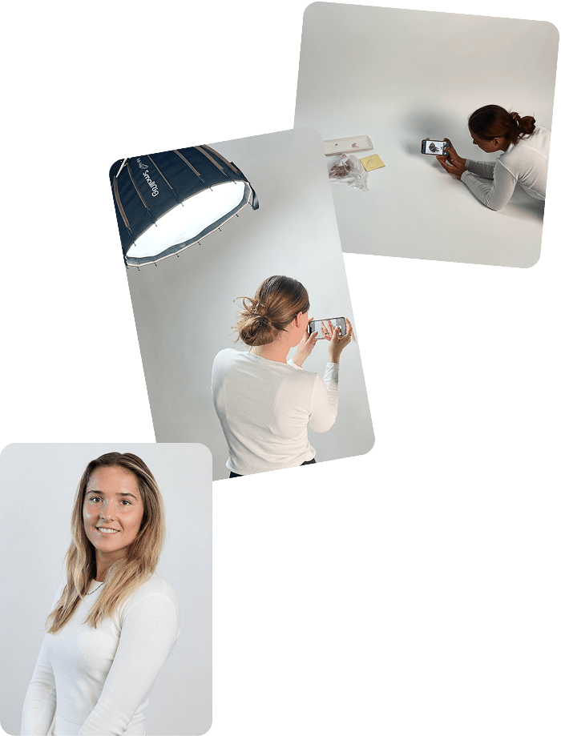
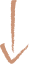
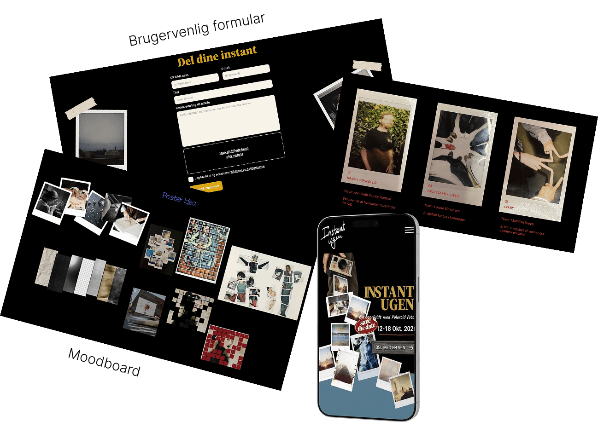
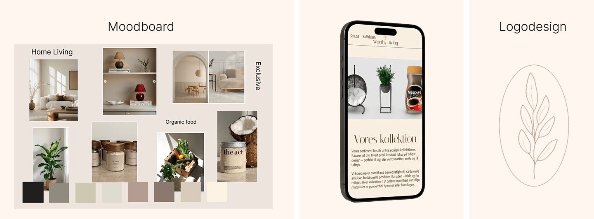

01
Virksomhedscase: Charlotte Tijhuis

MULTIMEDIEDESIGNER
Søger praktik 4. Semester



Mit navn er Louise de Wett Simonsen, og jeg er 23 år. Til daglig læser jeg til Multimediedesigner på Erhvervsakademi København på Guldbergsgade på Nørrebro.
Som person er jeg ambitiøs, detaljeorienteret og arbejdsom, og jeg motiveres af at udvikle mig og prøve nye ting. Jeg elsker at være kreativ og udfolde mig. Jeg tager gerne imod en udfordring og trives virkelig godt i et team, hvor vi kan inspirere hinanden, dele idéer og skabe gode løsninger sammen.




Gennem min uddannelse har jeg opbygget erfaring med at udvikle digitale og visuelle løsninger for forskellige virksomhedscases. Jeg har taget udgangspunkt i virksomhedens behov, målgruppe og visuelle identitet for at skabe en løsning, der passer til virksomheden.
Jeg har erfaring med hele designprocessen – fra research, brugerindsigter og idéudvikling til koncept, prototyping og færdig løsning.
Her har jeg blandt andet arbejdet med UI/UX, brugertests og prototyper i Figma samt logotisker og grafisk design i Illustrator. Derudover har jeg erfaring med foto- og videoproduktion, samt udvikling af visuelt indhold til sociale medier.
Til daglig arbejder jeg i Adobe Creative Cloud og har blandt andet erfaring med Figma, InDesign, Photoshop og Illustrator.